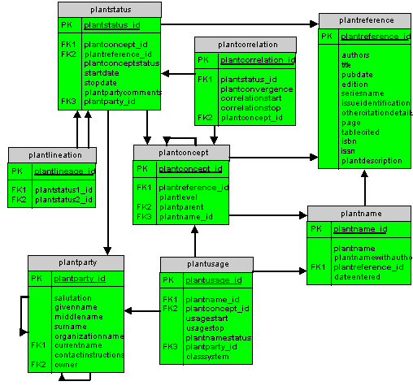

Plant names are stored in a table called plantName. Taxon concepts are stored in plantConcept, which points to a literature citation (reference) and the name (plantName) used in the reference. This couplet is sufficient to identify a taxon concept. The name that currently applies to a concept (in the perception of a party) is mapped in the plantUsage table, which contains a start and stop data for that name application. A particular party's view as to the status of a particular taxon concept (e.g., recognized, nonstandard) and the start and stop dates for that status are recorded in plantStatus. The standard taxon concept that a nonstandard concept maps to (in the perspective of a party) is identified through the contents of plantCorrelation, together with an indication of the degree of convergence (equal, larger, smaller, overlapping). Predecessor and successor taxa ion the usage of a party can be tracked via a plantLineage table. Original descriptions can be provided in plantDescription (a field in plantConcept) for taxa that do not conform to international codes but which are needed for plot records (e.g., hairy Poaceae, fleshy rosette, Potentilla canadensis-simplex complex).
